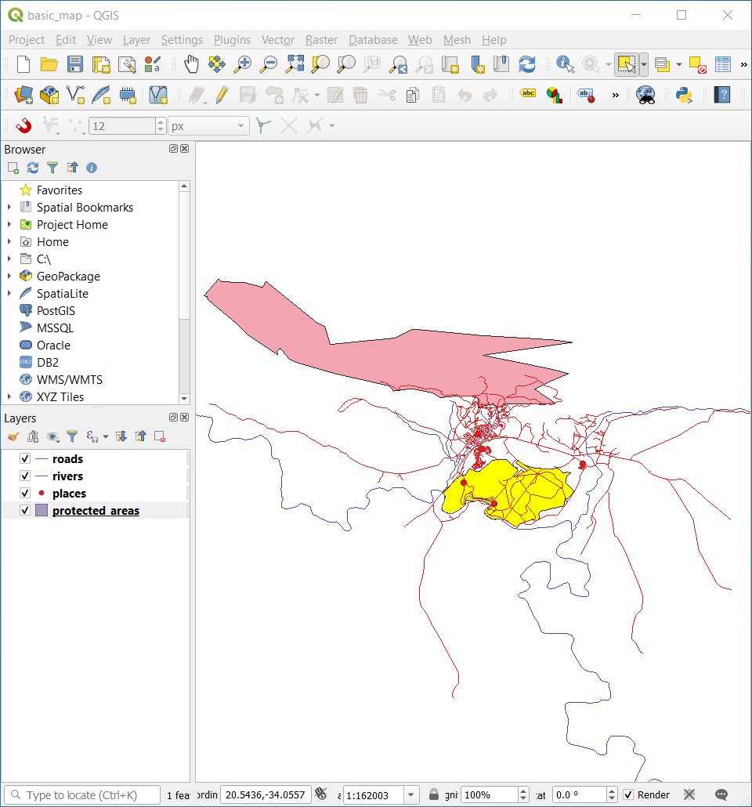
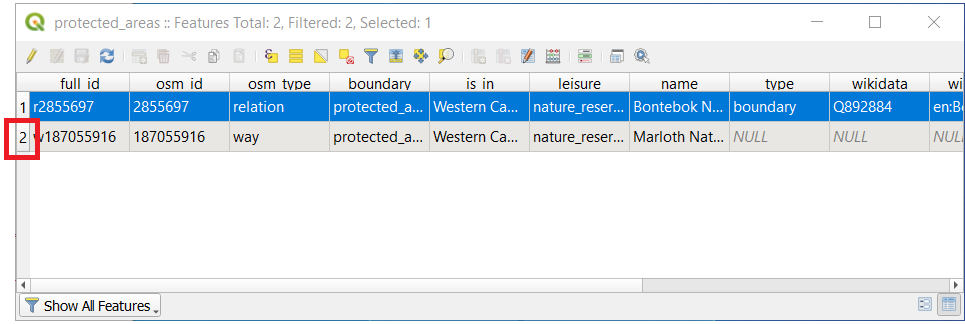
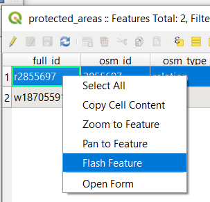

3.1. သင်ခန်းစာ- Vector ဇယားအချက်အလက်များ (Lesson: Vector Attribute Data)
Vector data သည် နေ့စဉ် GIS သုံးစွဲမှုတွင် အသုံးအများဆုံး data အမျိုးအစားဖြစ်ပါသည်။ Vector model သည် ပထဝီဝင် feature များ၏ တည်နေရာနှင့် ပုံသဏ္ဍာန်ကို point များ၊ line များနှင့် polygon များ (3D data အတွက်ဆိုလျှင် မျက်နှာပြင်များနှင့် ထုထည်များ) ဖြင့် ကိုယ်စားပြုဖော်ပြပါသည်။ ၎င်းတို့၏ အခြားဂုဏ်သတ္တိများသည် attribute (ဇယားအချက်အလက်) များအနေဖြင့် ပါဝင်ပါသည် (QGIS ထဲတွင် ဇယားအနေဖြင့် မကြာခဏပြသလေ့ရှိသည်)။
ယခုအထိ မြေပုံကြည့်ရှုသူသည် မြေပုံပေါ်တွင် မြေအသုံးချမှုဧရိယာများ၊ လမ်းများ၏ ပုံသဏ္ဍာန်များကိုသာ မြင်တွေ့နေရပြီး ၎င်းတို့၏ မည်သည့်အချက်အလက် အကြောင်းများကိုမျှ မသိရှိနိုင်ပါ။
သို့သော် GIS ၏အားသာချက်မှာ မြေပုံပေါ်တွင် မြင်တွေ့နေရသော အရာများအားလုံးတွင် attribute များပါရှိပါသည်။ GIS မြေပုံများသည် ရုပ်ပုံသီးသန့်သာ မဟုတ်ပါ။ ၎င်းတို့သည် တည်နေရာဖြင့် အရာများကိုသာမက ထိုအရာများအကြောင်း အချက်အလက်များကိုလည်း ကိုယ်စားပြုပါသည်။
ဤသင်ခန်းစာအတွက် ရည်မှန်းချက်- Vector data ၏ ဖွဲ့စည်းပုံအကြောင်းကို လေ့လာရန်နှင့် object တစ်ခု၏ attribute data များကို စူးစမ်းလေ့လာရန်
3.1.1. ★☆☆ လိုက်လုပ်ကြည့်ပါ- Layer Attribute များကိုကြည့်ရှုခြင်း (Follow Along: Viewing Layer Attributes)
သင်အလုပ်လုပ်ဆောင်မည့် data များသည် တည်နေရာအရ object များ မည်သည့်နေရာ တွင်ရှိနေသည်ဆိုသည်ကို ဖော်ပြရုံတင်မက ထို object များသည် ဘယ်လိုအရာတွေလဲ ဆိုသည်ကို ပြောပြပေးပါသည်။
ယခင်လေ့ကျင့်ခန်းများတွင် မြေပုံထဲ၌ protected_areas layer ထည့်သွင်းထားပြီးဖြစ်ပါသည်။ အကယ်၍ မထည့်သွင်းရသေးလျှင် exercise_data/shapefile လမ်းကြောင်းထဲတွင် protected_areas.shp ESRI Shapefile format dataset ကိုရှာဖွေနိုင်ပါသည်။
Protected area (ထိန်းသိမ်းရေးနယ်မြေ) polygon များတွင် spatial data များပါဝင်သော်လည်း protected area များ၏အကြောင်းကို attribute table ကိုဖွင့်ကြည့်ခြင်းဖြင့် လေ့လာကြည့်နိုင်ပါသည်။
Layers panel ထဲတွင်
protected_areaslayer ကို click နှိပ်ပါ။menu ထဲတွင်
 Open Attribute Table ခလုတ်ကိုနှိပ်ပါ (ထိပ်ပိုင်းရှိ toolbars ခလုတ်များဖြင့်လည်းသုံးနိုင်သည်)။
Open Attribute Table ခလုတ်ကိုနှိပ်ပါ (ထိပ်ပိုင်းရှိ toolbars ခလုတ်များဖြင့်လည်းသုံးနိုင်သည်)။ protected_areaslayer ၏ attribute ဇယားကို ပြသနေသော window အသစ်တစ်ခု ပွင့်လာပါလိမ့်မည်။
Row (အတန်း) တစ်ခုကို record တစ်ခုဟုခေါ်ပြီး မြေပုံထဲရှိ feature တစ်ခုနှင့်ဆက်စပ်နေပါသည်၊ ဥပမာ- polygon တစ်ခု။ Column (အတိုင်) တစ်ခုကို field တစ်ခု (သို့မဟုတ် attribute တစ်ခု) ဟုခေါ်ဆိုပြီး ၎င်းကို ဖော်ပြမည့် အမည်တစ်ခုပါရှိပါသည်၊ ဥပမာ-
nameသို့မဟုတ်id။ Cell (အကွက်) များထဲရှိ တန်ဖိုးများကို attribute တန်ဖိုးများ ဟု ခေါ်ပါသည်။ ထိုအဓိပ္ပါယ်သတ်မှတ်ချက်များသည် GIS တွင် အသုံးများကြသောအခါ ရင်းရင်းနှီးနှီးသိထားသင့်ပါသည်။protected_areaslayer ထဲတွင် features နှစ်ခု ပါရှိပြီး၊ ၎င်းတို့သည် မြေပုံမြင်ကွင်းပေါ်တွင်မြင်ရသော polygon နှစ်ခုဖြစ်ပါသည်။Note
fields နှင့် attribute တန်ဖိုးများ သည် မည်သည့်အရာကို ကိုယ်စားပြုသည်ကို နားလည်ရန် attribute တန်ဖိုးများ၏အဓိပ္ပါယ်ကိုဖော်ပြထားသော documentation (သို့မဟုတ် metadata) ကို ရှာဖွေဖတ်ရှုပါ။ ၎င်းကို dataset ဖန်တီးသူမှ ထည့်သွင်းပေးထားလေ့ရှိပါသည်။
နောက်တစ်ဆင့်အနေဖြင့် attribute ဇယားထဲရှိ record တစ်ခုသည် မြေပုံမြင်ကွင်းတွင်မြင်ရသော polygon feature တစ်ခုနှင့် မည်သို့အချိတ်အဆက်ရှိသည်ကို ကြည့်ကြပါမည်။
Main QGIS window သို့ ပြန်သွားပါ။
menu ထဲတွင်
 Select Feature(s) ခလုတ်ကို နှိပ်ပါ။
Select Feature(s) ခလုတ်ကို နှိပ်ပါ။Layers panel ထဲတွင်
protected_areaslayer ကိုရွေးချယ် (select) ထားပါ။မြေပုံမြင်ကွင်းသို့ mouse မြားကိုရွှေ့ပြီး polygon နှစ်ခုထဲမှ ငယ်သော တစ်ခုပေါ်တွင် left-click နှိပ်ပါ။ ရွေးချယ်ထားသော polygon သည် အဝါရောင် ဖြစ်သွားပါလိမ့်မည်။
 Attribute Table window သို့ပြန်သွားပါ၊ record (row) တစ်ခုသည် highlight (ထင်ရှားအောင်ပြ) ဖြစ်နေသည်ကို တွေ့ရပါမည်။ ထိုအရာများသည် ရွေးချယ်ထားသော polygon ၏ attribute တန်ဖိုးများဖြစ်ပါသည်။

Attribute ဇယားကို အသုံးပြုပြီးလည်း feature တစ်ခုကို ရွေးချယ်နိုင်ပါသည်။
Attribute Table window ထဲတွင် ရွေးချယ်မထားရသေးသော record ၏ row နံပါတ်ကို click နှိပ်ပါ။
 Main QGIS window သို့ပြန်သွားပြီး မြေပုံမြင်ကွင်းကို ကြည့်ကြည့်ပါ။ Polygon နှစ်ခုထဲမှ ကြီးသော polygon သည် အဝါရောင်ဖြစ်နေသည်ကို တွေ့ရပါလိမ့်မည်။
Feature ကို မရွေးချယ် (deselect) တော့ရန် Attribute Table window သို့သွားပြီး
 Deselect all features from the layer ခလုတ်ကို နှိပ်ပါ။
Deselect all features from the layer ခလုတ်ကို နှိပ်ပါ။
တစ်ခါတရံတွင် မြေပုံမြင်ကွင်းပေါ်တွင် feature များစွာပြသနေပြီး မည်သည့် feature ကို Attribute ဇယားမှရွေးချယ်ထားသလဲဆိုသည်ကို ကြည့်ရန် ခက်ခဲနိုင်ပါသည်။ Feature ၏ တည်နေရာကို ဖော်ထုတ်ပြသရန် Flash Feature tool ကိုအသုံးပြုနိုင်ပါသည်။
Attribute Table ထဲတွင်
full_idfield အတွက် attribute တန်ဖိုးr2855697ရှိသော row ထဲရှိ cell တစ်ခုခုပေါ်တွင် right-click နှိပ်ပါ။ပေါ်လာသော Menu ထဲတွင် Flash Feature ကိုနှိပ်ပြီး မြေပုံမြင်ကွင်းတွင် စောင့်ကြည့်ကြည့်ပါ။
 Polygon သည် အကြိမ်အနည်းငယ်မျှ အနီရောင်ဖြင့် လက်ခနဲ ဖြစ်သွားသည်ကို တွေ့မြင်ရပါမည်။ မမြင်လိုက်ရသည်ရှိသော် နောက်တစ်ကြိမ်ထပ်စမ်းကြည့်ပါ။
နောက်ထပ် အသုံးဝင်သော tool သည် Zoom to Feature tool ဖြစ်ပြီး ကိုယ်စိတ်ဝင်စားသည့် feature ကို zoom ချဲ့ပေးပါသည်။
Attribute Table ထဲတွင်
full_idfield အတွက် attributer2855697ရှိသော row ထဲရှိ cell တစ်ခုခုပေါ်တွင် right-click နှိပ်ပါ။ပေါ်လာသော Menu ထဲတွင် Zoom to Feature ကိုနှိပ်ပါ။

မြေပုံမြင်ကွင်းကို ကြည့်ကြည့်ပါ။ မြေပုံမြင်ကွင်းဧရိယာ၏ extent တွင် polygon သည် အပြည့်ပေါ်နေမည်ဖြစ်သည်။
Attribute ဇယားကို ပိတ်ထားနိုင်ပါသည်။
3.1.2. ★☆☆ မိမိကိုယ်တိုင်ကြိုးစားကြည့်ပါ- Vector Data Attribute များကို ဖွင့်ကြည့်လေ့လာခြင်း (Try Yourself: Exploring Vector Data Attributes)
rivers layer ထဲတွင် field မည်မျှရှိပါသလဲ။
သင့် dataset ထဲရှိ
townနေရာများအကြောင်း အနည်းငယ် ပြောပြပါ။places layer အတွက် attribute ဇယားကို ဖွင့်ပါ။ Label (အညွှန်း) ပုံစံဖြင့် ပြသလျှင် မည်သည့် field သည် အသုံးအဝင်ဆုံးဖြစ်မလဲ၊ ဘာကြောင့်လဲ။
အဖြေ
rivers layer ထဲတွင် field ၉ ခုရှိသင့်ပါသည်-
Layers panel ထဲရှိ layer ကို select လုပ်ပါ။
Right-click နှိပ်ပြီး Open Attribute Table ကိုရွေးပါ၊ သို့မဟုတ် Attributes Toolbar ပေါ်ရှိ
ခလုတ်ကို နှိပ်ပါ ( menu မှလည်း ဖွင့်နိုင်ပါသည်)။Column အရေအတွက်ကို ရေတွက်ပါ။
ပိုမြန်သောနည်းမှာ rivers layer ကို click နှစ်ချက်နှိပ်ပြီး tab ကိုဖွင့်လျှင် ဇယားရှိ field များ၏အရေအတွက်စာရင်းကို တွေ့ရပါလိမ့်မည်။
Town များအကြောင်းအချက်အလက်များသည် places layer ထဲတွင် ရှိပါသည်။ rivers layer မှာလုပ်ခဲ့သည့်အတိုင်း ၎င်း၏ attribute ဇယားကိုဖွင့်ပါ၊ feature နှစ်ခုပါဝင်ပြီး place attribute တွင် Swellendam နှင့် Buffeljagsrivier
townနှစ်ခုသတ်မှတ်ထားပါသည်။ ထို record နှစ်ခုမှ အခြား field များပေါ်တွင် မှတ်ချက်များ ထည့်သွင်းနိုင်ပါသည်။namefield သည် label (အညွှန်း) အနေဖြင့် ပြသရာတွင် အသုံးအဝင်ဆုံးဖြစ်ပါသည်။ အဘယ်ကြောင့်ဆိုသော် ၎င်း၏ တန်ဖိုးများသည် object တိုင်းအတွက် သီးခြားတစ်ခုစီဖြစ်ပြီး NULL တန်ဖိုးများလည်း မပါဝင်နိုင်ပါ။ Data တွင် အချို့ NULL တန်ဖိုးများပါဝင်နေလျှင် နေရာအများစုအတွက် အမည်များရှိနေသရွှေ့ စိတ်ပူရန်မလိုပါ။
3.1.3. နိဂုံးချုပ် (In Conclusion)
ယခုဆိုလျှင် သင့်အနေဖြင့် သင်အသုံးပြုနေသော data ထဲတွင် အမှန်တကယ်ရှိသည့်အရာများကို ကြည့်ရှုရန် attribute ဇယား အသုံးပြုနည်းကို သိရှိပြီးဖြစ်ပါသည်။ သင်စိတ်ဝင်စားသော attribute များရှိသော dataset မှာသာလျှင် သင့်အတွက် အသုံးဝင်ပါလိမ့်မည်။ လိုအပ်သော attribute အမျိုးအစားကိုသိလျှင် ရှိနေသော dataset ကိုအသုံးပြုလို့ရနိုင်/မရနိုင် လျင်မြန်စွာ ဆုံးဖြတ်ချက်ချနိုင်ပါသည်၊ သို့မဟုတ် လိုအပ်သော attribute data များရှိသော အခြား dataset တစ်ခုကို ရှာဖွေရန် လို/မလို ဆုံးဖြတ်ချက်ချနိုင်ပါသည်။
3.1.4. နောက်ထပ် ဘာအကြောင်းအရာလဲ? (What’s Next?)
Attribute အမျိုးမျိုးသည် ရည်ရွယ်ချက်အမျိုးမျိုးအတွက် အသုံးဝင်ပါသည်။ အချို့ကို မြေပုံပေါ်တွင် စာသားအနေဖြင့် တိုက်ရိုက် ပြသနိုင်ပါသည်။ ထိုသို့ လုပ်ဆောင်ခြင်းကို နောက်လာမည့် သင်ခန်းစာတွင် သင်ကြားရပါမည်။